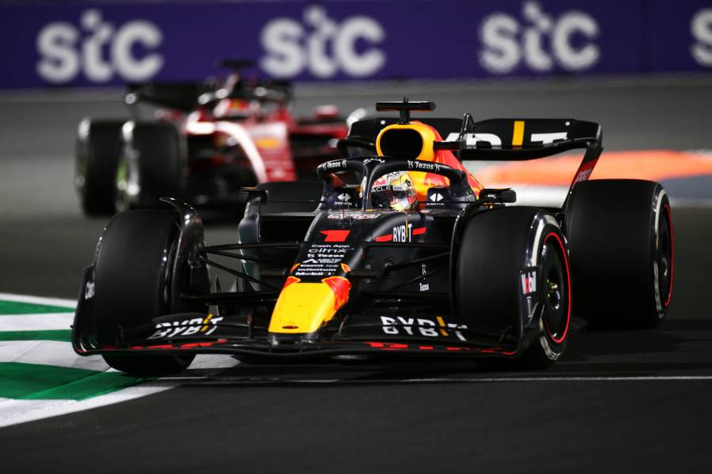

Formula 1

La Formula 1 è un campionato automobilistico regolato da precise norme e regolamenti che garantiscono una competizione equa e sicura. Comprendere le regole e il funzionamento della Formula 1 è fondamentale per apprezzare appieno questo sport.
Le regole della Formula 1 coprono diversi aspetti, tra cui le specifiche tecniche delle vetture, i limiti di peso e dimensioni, i criteri di sicurezza e le procedure di gara. Le monoposto devono rispettare rigide specifiche per quanto riguarda il motore, il telaio, gli pneumatici e l'aerodinamica.
Durante un weekend di gara, i piloti partecipano a sessioni di prove libere, qualifiche e la gara vera e propria. Le qualifiche determinano la posizione di partenza dei piloti sulla griglia di partenza, mentre la gara consiste in un certo numero di giri sul circuito. Durante la gara, i piloti devono rispettare le bandiere sventolate dai commissari di pista, che segnalano eventuali pericoli o situazioni particolari. Sono inoltre previsti pit stop per cambiare gli pneumatici e rifornire di carburante.

I punti vengono assegnati ai primi dieci piloti che terminano la gara, con il vincitore che riceve il maggior numero di punti. Alla fine della stagione, il pilota che ha accumulato il maggior numero di punti viene dichiarato campione del mondo.
Inoltre, le squadre partecipanti devono rispettare i regolamenti finanziari e di bilancio stabiliti dalla Federazione Internazionale dell'Automobile (FIA) per garantire una maggiore equità nel campionato.
